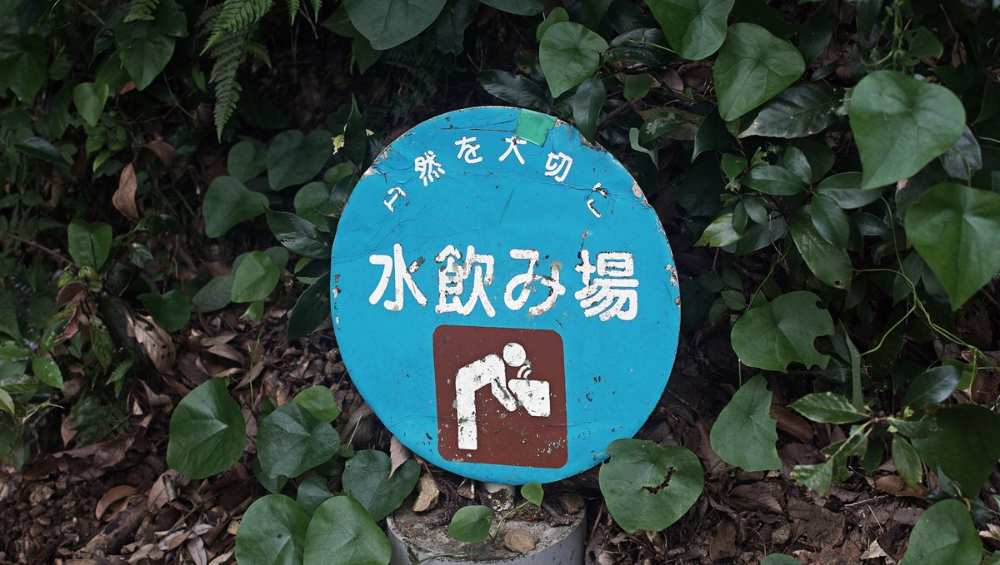
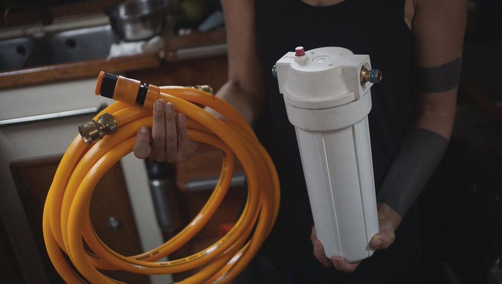

water
It's easy to forget that water is not inexhaustible when it flows so readily by the turn of the tap. Living on a boat certainly helps to develop a deeper connection to this precious resource. Depending on where you are, you'll have to treat it, catch it, carry it or pay for it.
Basic needs are covered with a mere 10 liters of water a day per person. A person needs between 2.7 and 3.7 liters of drinking water each day. When anchored near a port, once a week, we would ferry four bins of 10 liters from shore to the boat. To conserve water, our sink faucet is operated with a foot pump, where each push draws out 60 ml of water, allowing us to measure our usage.
On passages, we carry extra Jerrycans of water, enough to sustain two people for a few more weeks than the length of our trip. Having separate bins makes for a more resilient system, if salt gets into one tank, it won't corrupt the entirety of your supplies. A sure way of preventing contamination, is to check all o-rings and tanks for leaks before leaving. We chose not to have a desalinator aboard Pino, and have managed well without it. It's a device that is expensive, high maintenance and power-hungry.
If we have a tap near the boat that permits the use of a hose, we hook a twin set of filter housings in the line to purify the water. The 1st stage filter is pleated, and removes sediment, silt, dirt, rust, and other particles, and the 2nd stage carbon filter reduce the content of chlorine, concentration of toxic heavy metals, natural organic matter and oil products. When we don't have access to pressured water, we filter the water by gravity, see rain catchment for more information.
